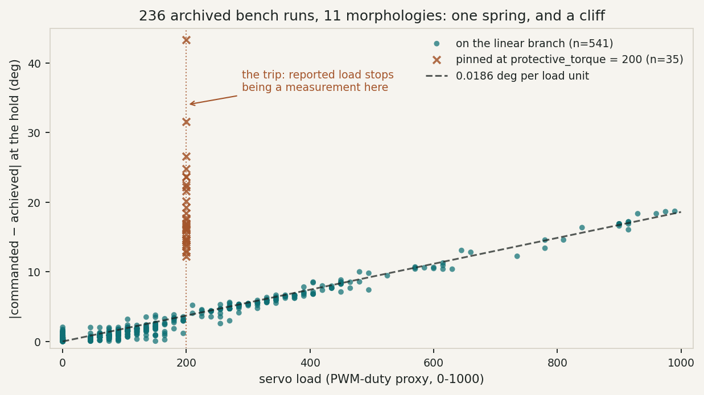
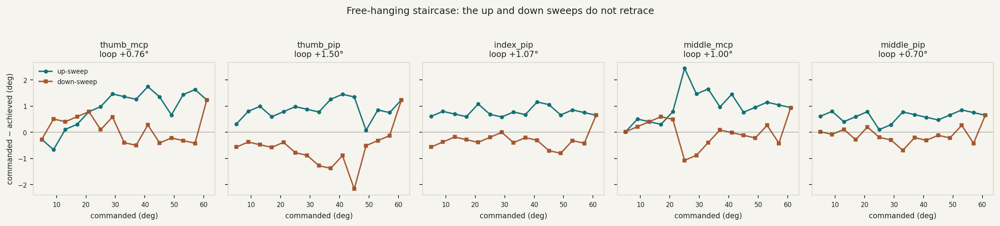
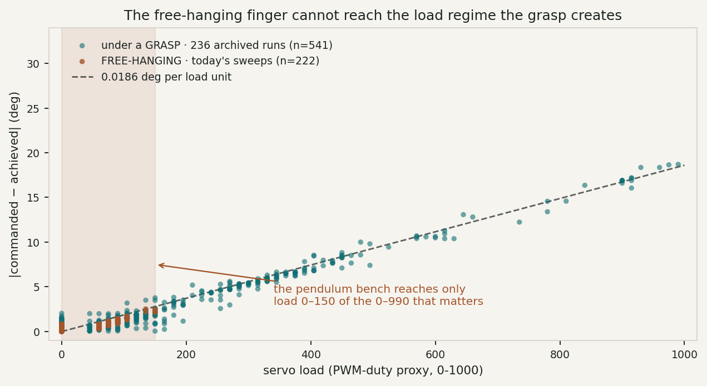
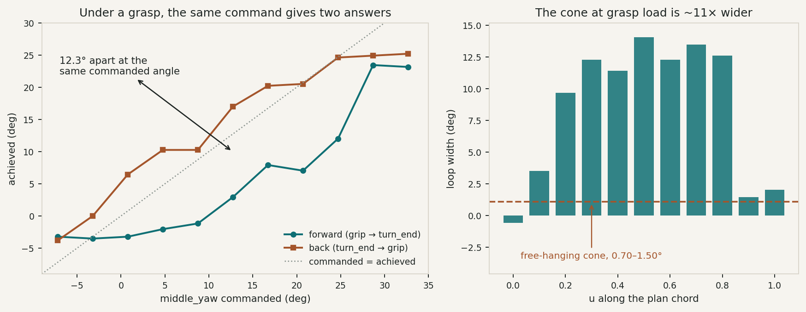
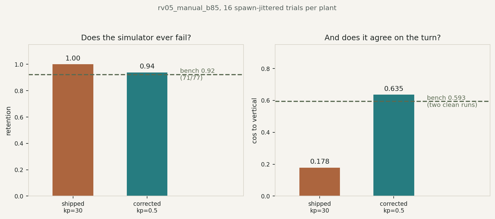
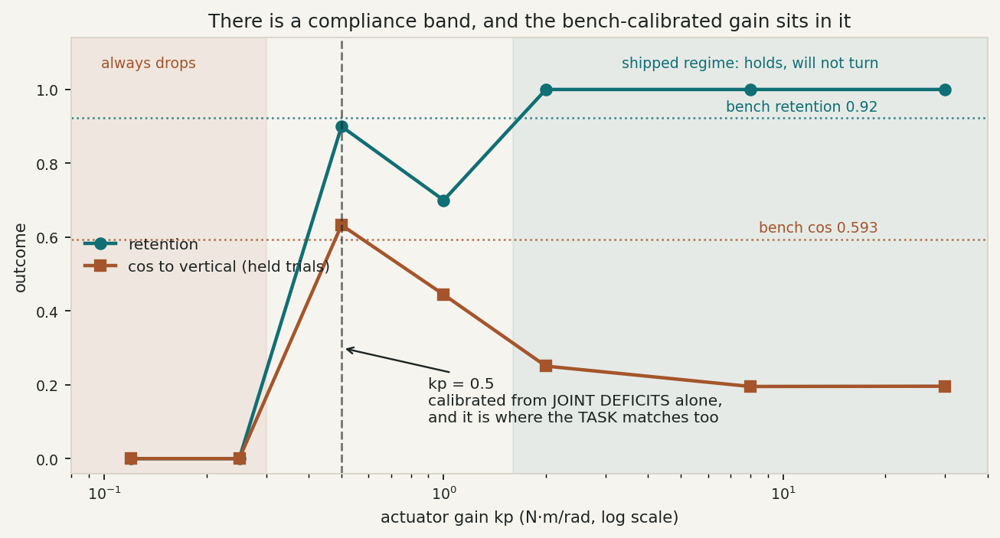

MorphoHand · real_v1 · 2 September 2026
The hand performs about two thirds of the turn its plan commands. That shortfall is not noise and it is not a bug in the controller — it is three separate properties of an SCS0009 that the simulator models none of. Two are now measured. The third is the one that decides whether MuJoCo can represent this hand at all, and this bench could not reach it.
Intent
Every learned reorientation policy this program has trained ignores its observations. Replaying a fixed action sequence over the whole 66-dimensional input costs ≤0.02 of held-cosine, on three separate hands, in two independent implementations. That has been read as a defect of the policies. It is more honestly a property of the problem they were given: in a rigid, deterministic simulator, open loop is optimal, and a policy that ignores its sensors is not failing, it is correct.
The bench does not behave that way. Across 236 logged runs the commanded and achieved
joint angles diverge by an amount that scales with load, and on the joint that drives the
turn — middle_yaw — a further 4.19° of the spread
is within-design: same hand, same plan, different trial. No feedforward correction
removes that, and no open-loop plan can see it.
So the actuator model is not a side quest. It is the thing that decides whether a residual policy has anything to learn. What follows identifies it.
The starting position
What every real_v1 scene says | What that asserts | The hand |
|---|---|---|
| position kp="30" | a near-rigid position source at these loads | a P controller at p_coefficient 15, and i_coefficient 0 |
| forcerange="-1000 1000" | effectively no torque ceiling | drops to protective_torque = 20 % under sustained overload |
no frictionloss, in any MJCF in the repo |
a frictionless joint | a measurable friction cone — §4 |
| mass 12.93 / 12.93 / 14.22 g | a modelled inertia | numerically identical to the capsule volumes in cm³: MuJoCo's default 1000 kg/m³ on a collision shape, never a model — §6 |
Hypotheses
The measured relationship — position error rising linearly with reported load, no intercept — is compatible with all three of the following, and terminal holds cannot separate them, because all three are linear in load with no constant term.
With i_coefficient 0 the position loop has no integral, so a standing load torque leaves an error that is never integrated away.
Signature: error is a function of current load alone. Approach direction is irrelevant.
Maps to: MuJoCo kp, exactly — a position actuator
is a P controller.
Static friction lets the joint stop anywhere within a band around its target rather than at it.
Signature: path dependence. An up-sweep and a down-sweep through the same set-points do not retrace; they open into a loop of twice the friction width.
Maps to: MuJoCo frictionloss, a constant.
BAM's M3: τ_f = K_v·q̇ + K_c + K_l·|τ_m − τ_e|. Gear teeth slide harder under load, so the cone widens with the torque passing through it.
Signature: loop width grows with load.
Maps to: nothing in MuJoCo. frictionloss is a
constant, and the width this needs runs from about 1° to 14° depending on load — §8.
Evidence · 236 archived runs

real_v1_bench_arrival.py reports, because a joint
already sagging at before cancels part of its own sag out of a
delta.Fifty of the 51 distinct reported load values are multiples of 15. The exception is
200, which is protective_torque — a register, not
a reading. A servo there has unloaded itself, so its deflection is set by whatever else is
pushing the joint. Separating those samples moves middle_yaw from R² 0.025 to
0.987. The two regimes were never one noisy phenomenon.
Out-of-sample check
Applied to three runs recorded afterwards and never used in the fit, the single constant
predicts the terminal deficits to a few tenths of a degree: middle_yaw
13.63° against 13.67 predicted, 10.70 against 11.16, 10.70 against 10.88;
thumb_mcp 7.86 against 7.81.
Evidence · the registers
Read with the bus free, identical across all nine servos:
| register | value | consequence |
|---|---|---|
| p_coefficient | 15 | the proportional gain |
| i_coefficient | 0 | no integral term — a standing load torque leaves a proportional error forever |
| d_coefficient | 15 | damping |
| cw / ccw_dead_zone | 1 | ≈0.29°, far too small to account for a 10–13° shortfall |
| max_temperature_limit | 70 °C | an independent thermal cutoff; the hand idles at 19–21 °C |
This is the useful kind of result: the load-proportional error is not material compliance
but the position loop's own droop, which is precisely what MuJoCo's position actuator
already models. kp = 30 is not the wrong kind of model. It is the
right model roughly 60× too stiff: calibrated against the bench's own
deficits the effective gain is about 0.5, at which the simulator
reproduces middle_yaw's shortfall as +11.09° against +11.68 measured. At the
shipped 30 it produces +0.03° — the simulator really does assume
commanded equals achieved.
Correction, 2026-09-02
An earlier version of this page reported the finger actuators as kp="4000"
and "250× too stiff". 4000 is the pose class, which drives the palm; the nine
finger actuators are class="ctrl" and ship at kp=30, read from
the compiled model's actuator_gainprm. The direction of the
conclusion is unchanged; the factor was wrong.
Evidence · today's experiment
Each flexion joint was walked from 5° to 61° and back in 4° steps, 0.4 s at each set-point so that what is read is an equilibrium rather than tracking lag, with the hand homed and the fingers hanging clear. This is BAM's third trajectory, "raising and lowering slowly".

| joint | mean error | loop width | loop max | mean |load| |
|---|---|---|---|---|
| thumb_mcp | +0.51° | +0.76° | 2.05° | 47 |
| thumb_pip | +0.12° | +1.50° | 3.52° | 56 |
| index_pip | +0.24° | +1.07° | 1.76° | 38 |
| middle_mcp | +0.49° | +1.00° | 3.52° | 44 |
| middle_pip | +0.25° | +0.70° | 1.46° | 10 |
The loop is two to six times larger than the systematic error. A
proportional droop predicts a loop of exactly zero, so at this load the friction term is not
a correction to the spring — it is the dominant effect, and the simulator carries no
frictionloss anywhere to represent it.
index_mcp is absent: it refused a set-point near 61°, clamping at its own
max_angle_limit. A per-servo range difference, not a failure of
the method.
The experiment that did not work
BAM varies load by bolting masses to its pendulum — 0.5, 1 and 1.5 kg over three link lengths. This hand has nothing to bolt a mass to, so the substitute was to fold the distal joint and change the moment arm instead: same joint, same trajectory, different load.
It did not work. Sweeping middle_mcp with middle_pip held at 0°,
25°, 50° and 72° produced mean loads of 44, 45, 40 and 43 — no variation at
all, and a loop of 1.00, 1.01, 0.88, 1.01° to match. The distal mass is too small and the
load register too coarse (a quantum of 15 on a signal of about 45) for the moment arm to
register.

So the question moved to the object
H3 could not be settled on a hanging finger. It could be settled by putting the load back where it belongs — in the grasp — which is §8.
Evidence · under a grasp
Same measurement, load supplied by the object instead of by gravity. The hand grips the
staged cylinder and all nine joints are interpolated along the plan's own chord
from grip to turn_end and back, eleven set-points each way, 0.7 s
at each. The path is the plan's, so it is the path the clearance gate cleared; inventing a
single-joint sweep would have left it and risked both the grip and the fingers.

The cone is not constant, and it is not a small correction. middle_yaw is
12.26° away from itself at the same commanded angle depending only on which direction it
arrived from. That is larger than the 10–13° droop, and it is the same size as the whole
shortfall the program has been trying to explain.
| joint | mean loop, u 0.2–0.8 | mean |load| |
|---|---|---|
| middle_yaw | +12.26° | 478 |
| middle_pip | +8.16° | 109 |
| middle_mcp | −3.60° | 54 |
| index_mcp | −1.97° | 75 |
| thumb_yaw | −1.51° | 174 |
| index_yaw | −1.13° | 163 |
| thumb_mcp | +0.33° | 454 |
What this does and does not identify
This is the hysteresis of the loaded system, not of the gearbox alone. The load
is a contact, so pad-on-shaft friction and any object slip that persists are inside these
numbers along with the servo's own friction. middle_pip is the tell: an 8.16°
loop at a mean load of only 109 does not fit load-dependent gearbox friction, and points
at the object having moved and stayed moved.
The conclusion for the simulator survives that ambiguity — a constant
frictionloss cannot produce a cone that is 1° free and 12° loaded, whichever
mechanism supplies it. The conclusion for BAM does not: separating gearbox
friction from contact hysteresis needs the pendulum bench with an added mass, not a grasp.
One incidental finding, visible in the load trace rather than the angles. On the first
pass, run with a 0.7 s dwell, middle_yaw hit exactly
200 — protective_torque — at the top of the turn and
held it through the first two steps of the return. The reorientation runs earlier the same
day, at full speed, ended at 585–735 and never tripped. Protection fires on sustained
overload, so stepping through the trajectory slowly makes the trip more likely, not
less, which inverts the usual instinct about being gentle with a servo.
Evidence · putting it back in the simulator
The corrections above were applied to rv05_manual_b85's own deploy scene and the plan run against it — sixteen spawn-jittered trials per plant, the shipped one against the corrected one, nothing else changed.

The gain was calibrated on joint deficits — how far short of its command each joint stops at the hold — and on nothing else. Sweeping it against the outcome of the whole task is therefore an independent check, and it lands in the same place.

That the shipped, stiffer plant under-predicts the turn is the counter-intuitive
part, and it is the point. Compliance is not an error term here — it is the mechanism. A
rigid finger holds its commanded pose and the shaft cannot settle into the grip and be
carried; a compliant one yields and the carry works. It is the same conclusion the
compliance-hardening study reached from the other direction, where b33's
reorient rate fell from 0.91 to 0.09 as contacts were stiffened.
The gate
Simulated retention was 1.00 for seven of eight transfer designs, which is why a residual policy had nothing to learn and why every previous reorienter could ignore its own observations without penalty. The corrected plant drops on 6 % of trials against the bench's 8 %. There is now a disturbance to learn.
Three harness bugs that each looked like a plant result
Recorded because each produced a confident, wrong number before it was caught, and all three are the same mistake — trusting a default instead of the plan's own exported state.
The palm was never lifted. The scene keyframe puts
palm_pz at 10 mm; the plan's replay_base_ctrl puts
it at 103.5 mm, because the object stands on a 100 mm bench post. Reset from the keyframe
and the fingertips sit 83 mm below the shaft, the grip closes on air, and all 16 trials
report "never retained".
The run began by letting go. replay_base_ctrl's
finger channels decode to exactly the plan's grip pose — the exported state is
already holding the shaft. Commanding open first releases it, and the released
shaft falls off the post and lands upright, reading cos 1.000. That is the failure
probe_real_v1_carry.py's docstring warns about by name.
The retention threshold was set above the real motion. A 10 mm rise was required to count as held, when the bench's own centre rises only about 6 mm through the turn — a criterion the successful behaviour fails.
Method
BAM identifies one actuated joint driving a rigid link and a point mass. Three differences matter here, and only the first is cosmetic.
Everything distal to the swept joint is itself a chain of actuators with their own
friction and their own droop. Leaving them torque-enabled and holding is the closest
approximation to BAM's rigid link available, and it is what was done here, but the
"link" still contains two compliant elements. Sweeping the distal-most joint
(pip) is the only genuinely clean single-joint pendulum on this hand.
yaw is a roll about the hanging finger's own long axis,
so gravity exerts no torque about it in this pose and a sweep is unloaded and
uninformative. It is also the joint that drives the turn and gives up 10–13° of a
commanded 32.68°. Identifying it needs the finger held horizontal — which the gantry
cannot do — or an offset mass on the yaw link.
A pendulum loads the joint through a known inertia. A grasp loads it through a contact whose stiffness, friction and geometry are themselves unidentified. The pendulum gives the actuator model cleanly and says nothing about the contact — which is the half to trust least when a residual policy meets the object.
A second model error, found on the way
The MJCF gives the three links 12.93, 12.93 and 14.22 g. Those numbers are identical to the capsule volumes in cm³, which is MuJoCo applying its default 1000 kg/m³ — water — to a collision shape. Against the hardware: each link carries a 13.2 g servo biased toward its lower end, a 30 %-infill PLA shell, and the yaw link additionally carries 10 g of boards that appear nowhere in the model.
| link | MJCF | servo | PLA shell* | boards | estimate |
|---|---|---|---|---|---|
| yaw_frame | 12.93 g | 13.2 | ~7.2 | 10.0 | ~30.4 g |
| mcp_frame | 12.93 g | 13.2 | ~7.2 | — | ~20.4 g |
| pip_frame | 14.22 g | 13.2 | ~8.0 | — | ~21.2 g |
*PLA shell from the capsule volume at an assumed effective density of 0.56 g/cm³ — solid PLA at 1.24 discounted for 30 % infill with perimeters and skins. That factor is a guess and a kitchen scale settles it; the servo and board masses are not.
The consequence is larger than the mass ratio suggests, because gravity torque and pendulum inertia both depend on where the mass sits. With the servo biased low, the link centre of mass moves from the modelled −11.4 mm to roughly −30 mm. First moment m·l goes from about 147 to about 620 g·mm — the real gravity torque on a finger joint is roughly four times what the simulator applies.
Consequences
Finite kp, fitted by matching simulated ctrl − qpos
at the hold to the measured deflection, which never needs the load-to-N·m conversion.
Finite forcerange for the trip. Real masses and centres of mass. A
frictionloss of about 1° equivalent torque is defensible now and its
load-scaling is not.
§8 shows the loaded cone is 11× the free one but cannot say how much of that is the servo and how much is the object slipping. The clean version is BAM's: the pendulum bench with a mass bolted on, which loads the gearbox without a contact. Until that is run, the 12.26° is a property of the hand-plus-object, which is the right quantity for the simulator and the wrong one for an actuator model.
With the plant corrected, re-score the eight transfer designs: the simulator currently orders them at ρs = +0.36 (p = 0.43), which is no relationship. And check that the corrected simulator drops the shaft the way the bench does — simulated retention is presently 1.00 for seven of eight designs, and a residual policy trained against a simulator that cannot fail will learn nothing.